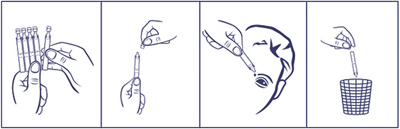
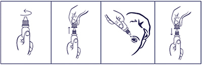

|
 |
| КРОМИЦИЛ®-СОЛОФАРМ (CROMICIL-SOLOPHARM) cromoglicic acid капли глазные | ||||||
|
Клинико-фармакологическая группа: Противоаллергический препарат для местного применения в офтальмологии Номер и дата регистрации: ЛП-003734 от 14.07.16 Код ATX: S01GX01 |
Владелец регистрационного удостоверения: зарегистрировано и произведено Представительство: | |||||
Форма выпуска, состав и упаковка ◊ Капли глазные в виде прозрачной или почти прозрачной, бесцветной или слегка окрашенной жидкости.
Вспомогательные вещества: глицерол безводный - 21 мг, динатрия эдетата дигидрат (трилон Б) - 0.1 мг, бензалкония хлорид - 0.05 мг, вода д/и - до 1 мл. 10 мл - флаконы из полиэтилена низкой плотности (1) с капельницей - пачки картонные. | ||||||
| ||||||
Описание препарата основано на официально утвержденной инструкции по применению и утверждено компанией-производителем для издания 2022 г. | ||||||
Фармакологическое действие |
Фармакокинетика |
Показания |
Режим дозирования |
Побочное действие |
Противопоказания |
Беременность и лактация |
Особые указания |
Передозировка |
Лекарственное взаимодействие |
Условия хранения и сроки годности |
Условия реализации
Фармакологическое действие
Противоаллергический препарат, предотвращает дегрануляцию тучных клеток и высвобождение из них медиаторов аллергических реакций - гистамина и лейкотриенов (особенно SRS-A). Механизм действия, вероятно, основан на стабилизации мембран тучных клеток и блокировании кальциевых каналов, что вызывает торможение высвобождения медиаторов. Кромоглициевая кислота блокирует как ранние, так и поздние аллергические реакции. Препарат не оказывает антигистаминного и сосудосуживающего действия. Фармакокинетика
Всасывание и распределение Абсорбция через слизистую оболочку глаза незначительная. Системная биодоступность - менее 0.03%. Связывание с белками плазмы - 65%. Метаболизм и выведение Не метаболизируется, выводится почками и через кишечник в неизмененном виде (приблизительно в равных количествах в течение 24 ч после применения). Т1/2 - 5-10 мин. Режим дозирования
Препарат наиболее эффективен при профилактическом применении. Заметный клинический эффект наступает через несколько дней или недель применения. Лечение начинают с инстилляции препарата по 1 капле 2 раза/сут в оба глаза, при необходимости режим дозирования может быть изменен на инстилляции по 1 капле 4 раза/сут в оба глаза. При сезонном аллергическом конъюнктивите лечение следует начинать сразу после появления первых симптомов или применять профилактически до начала сезона появления пыльцы. Лечение продолжают в течение всего сезона цветения или дольше, если симптомы сохраняются. Инструкция по применению Перед применением препарата необходимо тщательно вымыть руки. Если капля не попала в конъюнктивальный мешок, следует повторить закапывание. После закапывания закрыть глаза, не моргать и не открывать их около 2 мин для лучшего контакта слизистой оболочки глаза с препаратом. Порядок работы с тюбиком-капельницей  1. Открыть пакет, отделить одну тюбик-капельницу, остальные поместить обратно в пакет. 2. Вскрыть тюбик-капельницу (убедившись, что раствор находится в нижней части тюбика-капельницы, вращающими движениями повернуть и отделить клапан). 3. Закапать необходимое количество препарата в глаза. Доза, содержащаяся в тюбике-капельнице, достаточна для одного закапывания в оба глаза. После однократного использования тюбик-капельницу следует выбросить, даже если осталось содержимое. Порядок работы с флаконом  1. Вращающими движениями против часовой стрелки открыть флакон и снять колпачок. 2. Осторожно, не касаясь пальцами наконечника флакона, перевернуть флакон, зафиксировать между большим и указательным пальцами одной руки. 3. Запрокинуть голову назад, расположить наконечник флакона над глазом и указательным пальцем другой руки оттянуть нижнее веко вниз. Слегка надавить на флакон и закапать необходимое количество препарата в конъюнктивальный мешок глаза. Необходимо избегать контакта наконечника открытого флакона с поверхностью глаза и руками. 4. После использования надеть колпачок на флакон и закрыть вращающими движениями по часовой стрелке. После вскрытия флакона препарат можно использовать в течение 1 месяца. По истечении этого срока препарат следует выбросить. При видимых повреждениях флакона применять препарат не следует. Побочное действие
Указанные ниже нежелательные эффекты приводятся в соответствии со следующими градациями частоты их степени тяжести: очень часто (>1/10), часто (>1/100, <1/10), нечасто (>1/1000, <1/100), редко (>1/10000, <1/1000), очень редко (<1/10000), частота неизвестна (не может быть оценена по имеющимся данным). Нежелательные лекарственные реакции представлены в порядке убывания их степени тяжести. Со стороны органа зрения: очень редко - быстро проходящее нарушение четкости зрительного восприятия, кратковременное ощущение жжения, инородного тела, сухости в глазу, отек конъюнктивы, слезотечение, мейбомит. Прочее: очень редко - аллергические реакции (зуд, легкая болезненность конъюнктивы, конъюнктивальная инъекция), изменение вкусовых ощущений. Противопоказания
С осторожностью: детский возраст. Применение при беременности и кормлении грудью
Безопасность применения препарата при беременности и в период грудного вскармливания не установлена, поэтому в этот период препарат следует применять с осторожностью и только в том случае, когда предполагаемая польза для матери превосходит потенциальный риск для плода и ребенка. Лекарственный препарат экскретируется с грудным молоком; в период лечения препаратом следует решить вопрос о прекращении грудного вскармливания. Особые указания
Консервант, содержащийся в препарате, может оказывать раздражающее действие на глаза при ношении контактных линз, поэтому любые контактные линзы следует вынимать перед закапыванием препарата и устанавливать не ранее чем через 15 мин после инстилляции. Влияние на способность к управлению транспортными средствами и механизмами Пациенты, у которых после применения препарата появляется кратковременное нарушение четкости зрительного восприятия, не должны управлять транспортными средствами и механизмами сразу после применения глазных капель. Лекарственное взаимодействие
Неблагоприятного взаимодействия кромоглициевой кислоты с другими лекарственными препаратами не отмечалось. |
||||||
Вернуться наверх |
||||||
Copyright © Справочник Видаль «Лекарственные препараты в России», Москва, Россия